Differential Probes
Accurate differential measurements from 500 MHz to 30 GHz, with options for standard, high-voltage, and GaN-optimised common-mode applications.
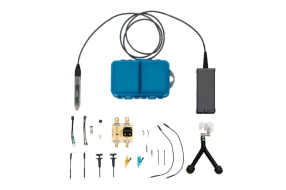
Differential Probes ≤ 1.5 GHz
500 MHz – 1.5 GHz- Wide dynamic range for accurate signal reproduction
- Low circuit loading for minimal measurement disturbance
- Excellent noise performance up to 1.5 GHz
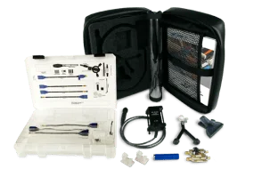
Differential Probes 4 – 6 GHz
4 – 6 GHz- 5 Vp-p dynamic range with ±3 V offset
- Multiple tip options: solder-in, QuickLink, HiTemp
- Low noise and loading at high frequencies
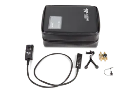
Differential Probes 8 – 30 GHz
8 – 30 GHz- Industry-leading bandwidth up to 30 GHz
- Ideal for serial data, DDR, and high-speed signals
- Solder-in, HiTemp, and QuickLink connector options
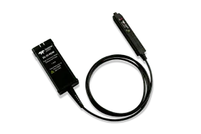
Differential Probes 60 V Common Mode
Up to 1 GHz- Highest accuracy and best CMRR in class
- Lowest noise for precision power measurements
- Optimised for GaN power conversion measurement
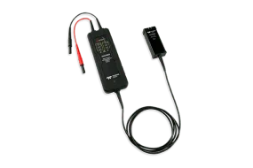
High Voltage Differential Probes
Up to 6 kV CAT III- Safety-rated at 1 kV, 2 kV, and 6 kV CAT
- Exceptional CMRR and 1% gain accuracy
- Low noise for high-voltage signal integrity
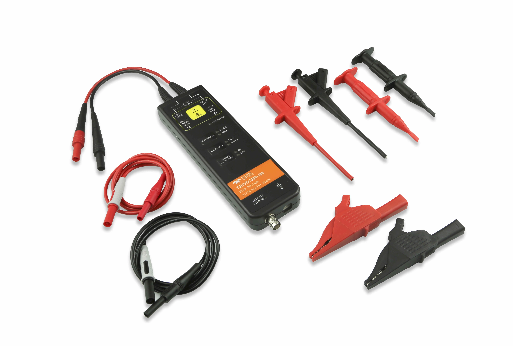
T3 LV/HV Differential Probes
Externally Powered- Compatible with any oscilloscope via high-impedance BNC
- Low and high voltage measurement variants
- No proprietary oscilloscope interface required
High Voltage Probes
Optically isolated and passive high voltage probes for safe, accurate measurements on GaN, SiC, and power electronics applications.
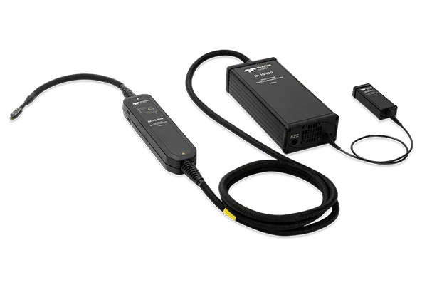
High Voltage Optically Isolated Probes
GaN & SiC- Optical isolation for safe high-voltage measurement
- Highest accuracy and widest bandwidth in class
- Wide voltage range for power electronics testing
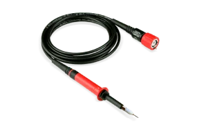
High Voltage Passive Probes
1 kV – 6 kV- Ground-referenced measurements from 1 kV to 6 kV
- Simple passive design for reliable high-voltage probing
- Safety-rated for demanding lab environments
Active & Passive Voltage Probes
High-fidelity active probes, power rail probes, passive probes, and transmission line probes for general-purpose and specialised voltage measurements.
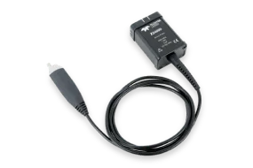
Active Voltage Probes
1 – 4 GHz- Less than 1 pF tip capacitance for minimal loading
- ±8 V dynamic range with ±12 V offset
- High-fidelity signal capture at 1 to 4 GHz
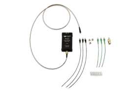
Rail Probes
4 GHz- 4 GHz bandwidth for power rail integrity analysis
- ±60 V offset with ±800 mV dynamic range
- Best-in-class solution for probing power rails
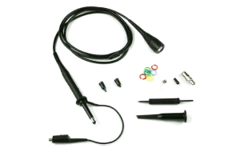
Passive Probes
10x | 10 MΩ- Standard 10x attenuation, 10 MΩ input impedance
- Reliable general-purpose low-frequency probing
- Included with most Teledyne LeCroy oscilloscopes
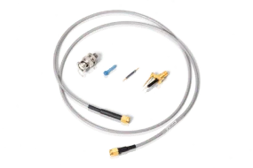
Transmission Line Probes
DC – 7.5 GHz- High-bandwidth passive probe up to 7.5 GHz
- 50 Ω compatible for minimal signal reflections
- Available in 10x or 20x attenuation
Current Probes
AC/DC current probes using Hall effect and transformer technology, T3CP externally powered probes, and Rogowski coils for high-current applications.
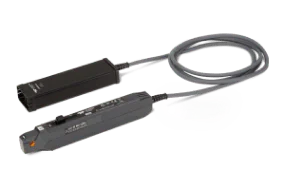
AC/DC Current Probes
Up to 1000 A | 100 MHz- Measures AC, DC, and impulse currents
- Hall effect and transformer technology combination
- Up to 1000 A range at 100 MHz bandwidth
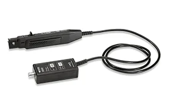
T3CP Series AC/DC Current Probes
Externally Powered- Compatible with any oscilloscope via BNC input
- Externally powered for flexible lab deployment
- AC and DC current in a universal form factor
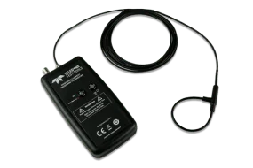
Rogowski Coil Current Probes
60 – 6000 A | 30 MHz- Measures 60 to 6000 Amps current range
- 0.1 Hz to 30 MHz frequency coverage
- Small flexible sense coils fit tight spaces easily
Accessories
Probe adapters, replacement parts, and kits to keep your Teledyne LeCroy probe setup running at peak performance.
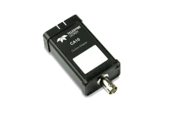
Probe Adapters
Universal Interface- Interface LeCroy and third-party probes seamlessly
- Adapts across different connector types and sensors
- Maximises compatibility with existing probe inventory
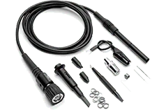
Probe Parts & Kits
Replacement Parts- Replacement tips, accessories, and probe components
- Complete kits to maintain probe performance
- Compatible with Teledyne LeCroy probe families